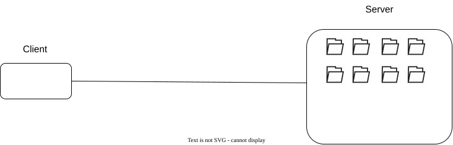

Representational State Transfer (REST)
Contribuição de Samuel Cavalcanti
Esta nota visa introduzir e explicar o que é a transferência de estado representacional. REST é um estilo arquitetural para um sistema distribuído de hipermídia. Em um sistema distribuído, um processo pode ser visto como um componente que se comunica com outro componente através de um conector. Um sistema distribuído de hipermídia é, por exemplo, o sistema que permite que você leia esta nota: um navegador que funciona como um cliente e recebe como resposta o Hypertext Markup Language (HTML) da sua solicitação feita através do Hyper Text Transfer Protocol (HTTP). Um estilo arquitetural é o conjunto de restrições aplicadas em uma arquitetura com o objetivo de replicar os bons resultados obtidos a partir dessas restrições.
Compreendendo REST através das suas restrições
Uma forma de entender um estilo arquitetural é através de suas restrições, ou seja, que um componente do sistema pode, ou não pode fazer. Cada componente do sistema possui as suas responsabilidades e seus limites.
Restrição Cliente-Servidor
A primeira barreira arquitetural imposta no REST é o cliente-servidor. Separando inicialmente o sistema em dois componentes: cliente e servidor. O componente cliente se torna responsável pela interface do usuário. O componente servidor se torna responsável pelo armazenamento de dados. Essa separação permite portabilidade e escalabilidade. Escalabilidade pois tanto o componente servidor quanto o cliente evoluem separadamente. Portabilidade, uma vez que, permite diferentes plataformas implementarem e funcionarem como cliente.

Restrição: Comunicação sem estado (stateless)
A comunicação entre o cliente e o servidor não pode necessitar de um estado. Cada pedido realizado pelo cliente deve conter todas as informações necessárias para que o servidor possa responder a esse pedido. Caso seja necessário informações sobre a sessão, essas informações deverão estar armazenadas pelo cliente. Esta restrição busca aumentar a visibilidade, escalabilidade e confiabilidade. Aumenta a visibilidade pois não é necessário observar uma sequência de eventos para entender a resposta do pedido. Aumenta a confiabilidade pois torna mais fácil o servidor se recuperar de uma falha quando ele não armazena o estado da sessão. Aumenta a escalabilidade pois o servidor poupa recursos não armazenando o estado da sessão e libera recursos mais rapidamente, uma vez que, ao responder um pedido, pode liberar a memória.
Restrição: cache
As respostas do servidor deverão ser rotuladas como armazenáveis em cache ou não. O objetivo dessa restrição é melhorar a eficiência na rede, reduzindo o número de interações com o servidor e melhorando a escalabilidade. Cache é um trade-off entre confiabilidade e escalabilidade. O armazenamento das respostas no lado do cliente reduz a confiabilidade, uma vez que pode haver diferenças no conteúdo salvo no cliente e no conteúdo do servidor.
Restrição: Interface uniforme
A interface REST é otimizada para a transferência de dados de hypermedia, como por exemplo: Hyper Text markup language (HTML). Cada componente no sistema está restringido a interface REST. Obrigando todos os componentes a seguirem a mesma interface, melhora-se a visibilidade, uma vez que as interações dos componentes são simplificadas. Criar um padrão de interface no entanto sacrifica performance, pois os diferentes componentes devem seguir o padrão ao invés de projetar uma interação específica que atende melhor os requisitos da aplicação.
JSON não é um hypermedia
Ironicamente, o formato JSON não é naturalmente uma hipermídia. Para um objeto JSON ser uma hipermídia, ele precisa incluir os Hypermedia Controls; portanto, não confunda REST API com uma JSON API. Mais informações sobre essa confusão podem ser encontradas nessa issue: Clarify statement "JSON is not a hypermedia". Informações sobre Hypermedia Controls: Richardson Maturity Model steps toward the glory of REST
Restrição: Sistemas em camadas
Um sistema em camadas é uma restrição onde um serviço só pode se comunicar com o serviço que está acima e só pode depender do serviço que está abaixo.

Esta restrição impede que um componente “veja” além da sua camada intermediária, permitindo uma interdependência entre os componentes e aprimorando o comportamento do sistema, uma vez que se pode adicionar um balanceador de carga, firewall ou uma camada intermediária que visa encapsular um sistema legado. Restringir os componentes em um sistema de camadas traz um ponto negativo que é o overhead: cada camada reduz a performance percebida pelo usuário.
Restrição: Código sob demanda
A última restrição do REST é a capacidade do cliente em executar código sobre um conjunto restrito de recursos, como por exemplo executar JavaScript. Esta restrição é opcional, mas provê uma extensibilidade ao sistema ao mesmo tempo que se reduz o número de funcionalidades necessárias e pré-estabelecidas pelo cliente.
Contexto histórico
REST foi proposto no ano 2000, onde aplicações web eram basicamente páginas estáticas com um pouco de JavaScript.
Conclusão
REST é uma arquitetura cliente-servidor cuja comunicação não tem estado, as respostas dos servidores devem poder ser classificadas como armazenáveis em cache ou não. Todos os componentes devem possuir a mesma interface. Um componente só pode depender e se comunicar com componentes abaixo e acima, respectivamente. Opcionalmente o cliente pode executar código em um conjunto restrito de recursos.